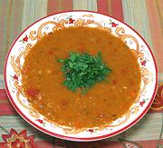

|
Red Lentil and Apricot SoupArmenian - Vospapur | ||||
| Makes: Effort: Sched: DoAhead: |
4 salad ** 20 min Short |
Fruit soups are very popular from Armenia to Tajikistan, and apricots are the preferred fruit for many of them. This is an Armenian version based on red lentils. See also Variations. | |||
|
|
1 3-1/2 ------- 1 8 2-1/2 3 ------- 1 2 1/2 1/3 ------- 3 4 ------- ar |
c oz --- # oz oz cl --- t T T t --- T c --- |
Red Lentils Apricots, dried -- Vegies Tomatoes Onion Carrot Garlic -- Seasonings Cumin Seeds Thyme, fresh Salt Pepper ---------- Olive Oil Broth (1) -- Garnish Parsley Leaves |
Prep - (20 min)
|
top_lntapr1, pttt88, 181121 25 -
www.clovegarden.com
©Andrew Grygus -
agryg@aaxnet.com - Linking to and non-commercial use of this page is
permitted.